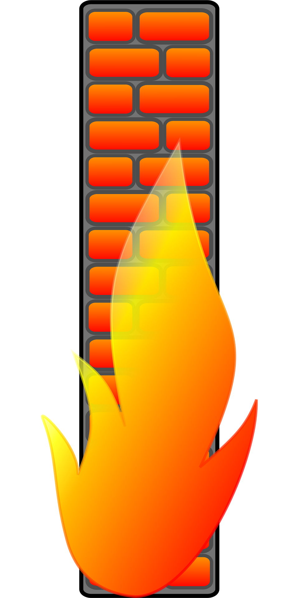

Virustorjunta käsittää sellaisia tietokoneohjelmia, joilla etsitään ja tuhotaan paikallisesta järjestelmästä tai etäpisteestä haitallisia prosesseja, niiden tarvitsemia tiedostoja tai ajettaviin ohjelmatiedostoihin tarttunutta haittakoodia.
Palomuuri on tietotekniikassa järjestelmä, jonka on tarkoitus estää asiaton pääsy verkosta toiseen, varsinkin internetistä lähiverkkoon.

Kyberturvallisuus on turvallisuuden osa-alue, jolla pyritään sähköisen ja verkotetun yhteiskunnan turvallisuuteen.
Tietoturvassa demilitarisoitu alue (engl. demilitarized zone, DMZ) tarkoittaa fyysistä tai loogista aliverkkoa, joka yhdistää organisaation oman järjestelmän turvattomampaan alueeseen, esimerkiksi Internetiin. Demilitarisoidun alueen tarkoitus on lisätä ylimääräinen tietoturvataso organisaation lähiverkkoon.
GDPR on EU:n asetus jolla pyritään yhtenäistämään tietosuojaa koskeva lainsäädäntö EU: valtioissa